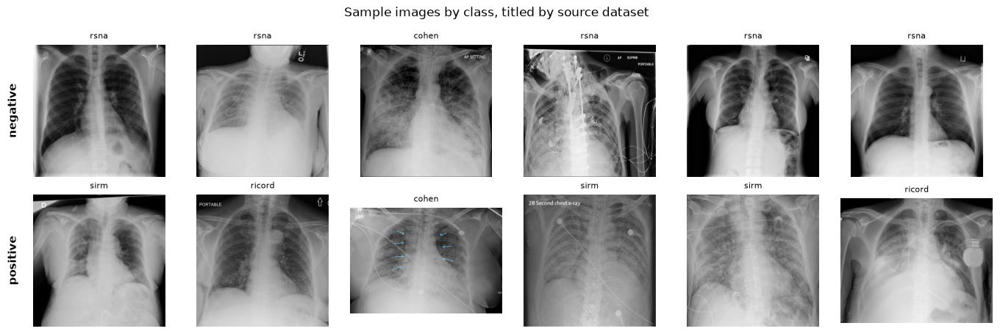
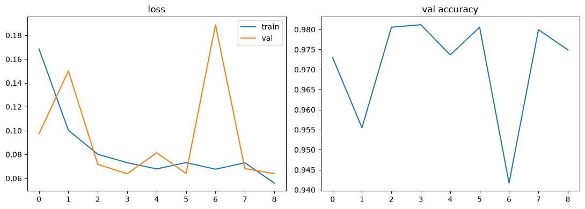
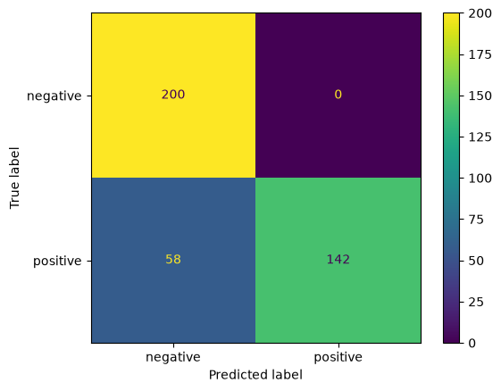
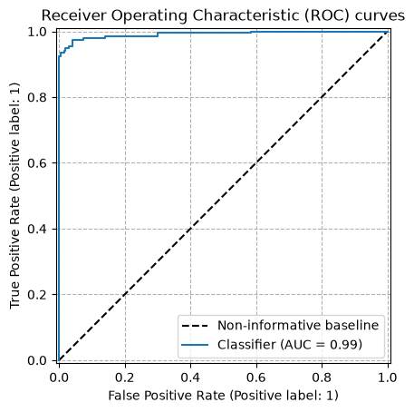

COVIDx Chest X-Ray Classifier: Training¶
This notebook does three things:
Rebuilds a COVIDx-style binary dataset (COVID vs. non-COVID chest X-rays) the same way as the reference notebook
create_COVIDx-datarobot.ipynb: COVID-positive frontal images come from theieee8023/covid-chestxray-datasetrepo, and the non-COVID images (normal + bacterial/viral pneumonia) come from the Kaggle Chest X-Ray Images (Pneumonia) dataset.Trains an image classifier (transfer learning on top of a pretrained CNN) on that dataset, the way many early COVID-19-from-X-ray papers did.
Applies explainability (XAI) - Grad-CAM, plus a quantitative “where is the model looking” audit and a deliberate source-leakage probe - to check for the exact failure mode described in DataRobot’s “Identifying Leakage in Computer Vision on Medical Images” post: the COVID-positive and COVID-negative images come from different source datasets, so a classifier can reach great-looking accuracy by learning to recognize which dataset an image came from (compression, cropping, embedded markers, aspect ratio, etc.) instead of learning anything about the lungs.
This is a leakage case study, not a diagnostic tool. The point of the notebook is to reproduce the shortcut-learning failure and show how to detect it with XAI, not to build something that should ever be used clinically. This mirrors published findings such as DeGrave et al., “AI for radiographic COVID-19 detection selects shortcuts over signal,” Nature Machine Intelligence (2021).
import os
import certifi
os.environ["SSL_CERT_FILE"] = certifi.where()
import random
import shutil
import subprocess
from pathlib import Path
import cv2
import numpy as np
import pandas as pd
import matplotlib.pyplot as plt
import torch
import torch.nn as nn
import torchvision
from PIL import Image
from torch.utils.data import Dataset, DataLoader
from torchvision import transforms
from sklearn.metrics import accuracy_score, roc_auc_score, confusion_matrix, classification_report
from tqdm.auto import tqdm
from utils_covidx import *
# Root folders - change these if you already have the raw datasets somewhere
RAW.mkdir(parents=True, exist_ok=True)
2 Get the raw data¶
COVID-positive images - clone the covid-chestxray-dataset repo:
Non-COVID images - the Kaggle Chest X-Ray Images (Pneumonia) dataset. This one needs a Kaggle account and API token (~/.kaggle/kaggle.json); see the Kaggle API docs. Skip this cell and point pneumonia_dir at a local copy if you already have it.
# COVIDx CXR-2 dataset: https://www.kaggle.com/datasets/andyczhao/covidx-cxr2/versions/1
# Needs a Kaggle account and API token (~/.kaggle/kaggle.json);
# see the Kaggle API docs: https://www.kaggle.com/docs/api
# Skip this cell if you already have a local copy under RAW / "covidx-cxr-v1".
covid_repo = RAW / "covidx"
if not (covid_repo / "train.txt").exists():
raise FileNotFoundError("Dataset missing")
else:
print("already downloaded:", covid_repo)
already downloaded: covidx_leakage_study/raw/covidx-cxr-v1
for path in covid_train_txt, covid_test_txt, covid_train_images, covid_test_images:
assert path.exists(), path
3. Build the COVIDx-style dataset¶
This follows the same logic as the reference notebook:
keep only frontal COVID views (
PA,AP,AP Supine),drop a handful of known duplicate/corrupt files,
split the COVID images by patient ID (not by image) so the same patient never appears in both train and test,
build the non-COVID side from the Kaggle set’s
NORMAL+PNEUMONIAfolders (splittingPNEUMONIAinto bacterial vs. viral by filename, same as the reference notebook, then folding both into one “non-COVID” class).
We also record each image’s source dataset in the manifest - that column is not used for training the disease classifier, only for the leakage probe in Section 11.
read_txt?
Signature: read_txt(image_dir, path)
Docstring: Custom read function since there are spaces in the first column, which pd.read_csv cannot handle
File: /pfs/lustrep4/scratch/project_465002387/mohanana/xai-for-life-science-dev/chest_xray/utils_covidx.py
Type: function
train_df = read_txt(covid_train_images, covid_train_txt)
test_df = read_txt(covid_test_images, covid_test_txt)
print(f"{len(train_df)} frontal COVID images from {train_df['patient_id'].nunique()} patients")
15950 frontal COVID images from 14967 patients
train_df.data_source.unique()
<ArrowStringArray>
['cohen', 'actmed', 'fig1', 'sirm', 'ricord', 'rsna']
Length: 6, dtype: str
test_df.data_source.unique()
<ArrowStringArray>
['ricord', 'rsna']
Length: 2, dtype: str
train_df.head()
| patient_id | filename | class | data_source | |
|---|---|---|---|---|
| 0 | 5 | ARDSSevere.png | negative | cohen |
| 1 | 25 | acute-respiratory-distress-syndrome-ards-1.jpg | negative | cohen |
| 2 | 26 | acute-respiratory-distress-syndrome-ards.jpg | negative | cohen |
| 3 | 27 | ards-secondary-to-tiger-snake-bite.png | negative | cohen |
| 4 | 28 | pneumocystis-pneumonia-2-PA.png | negative | cohen |
train_df["class"].value_counts()
class
negative 13792
positive 2158
Name: count, dtype: int64
test_df["class"].value_counts()
class
positive 200
negative 200
Name: count, dtype: int64
Quick exploratory data analysis on the raw covid-chestxray-dataset metadata table¶
Standard tabular checks - shape, dtypes, missingness, summary stats, and the key categorical breakdowns - before we filter it down to frontal views only.
len(train_df)
15950
train_df.dtypes
patient_id str
filename str
class str
data_source str
dtype: object
missing = train_df.isna().sum().sort_values(ascending=False)
missing_pct = (missing / len(train_df) * 100).round(1)
pd.DataFrame({"missing_count": missing, "missing_pct": missing_pct})
| missing_count | missing_pct | |
|---|---|---|
| patient_id | 0 | 0.0 |
| filename | 0 | 0.0 |
| class | 0 | 0.0 |
| data_source | 0 | 0.0 |
train_df.describe(include="all").T
| count | unique | top | freq | |
|---|---|---|---|---|
| patient_id | 15950 | 14967 | SITE2-000252 | 33 |
| filename | 15950 | 15950 | ARDSSevere.png | 1 |
| class | 15950 | 2 | negative | 13792 |
| data_source | 15950 | 6 | rsna | 13388 |
Look at the images themselves, not just the manifest rows¶
manifest.shape above tells you about the table of file paths and labels. It says nothing about what’s actually inside the image files - resolution, channels, dtype, or what they look like. Here’s the image equivalent of df.shape / df.head(): print the raw array shape for a few samples, then look at an actual grid of images per class.
Note: That shape=(H, W, 3) is the raw NumPy array shape of each image after cv2.imread, three numbers:
First number = height (rows of pixels) Second number = width (columns of pixels) Third number = channels - 3 means RGB/BGR color (3 numbers per pixel: red, green, blue intensity)
# raw array shape/dtype for a handful of samples - the image analog of `df.shape`
sample_rows = train_df.sample(6, random_state=SEED)
for _, row in sample_rows.iterrows():
img = cv2.imread(covid_train_images / row["filename"])
print(
f'{row["filename"]:30s} shape={img.shape} dtype={img.dtype} '
f'label={row["class"]:10s} source={row["data_source"]}'
)
5ed4e7c6-77e4-4462-ab68-e7ddfe2bad5a.png shape=(1024, 1024, 3) dtype=uint8 label=negative source=rsna
68_2020_1364_Fig1_HTML-c.png shape=(512, 582, 3) dtype=uint8 label=positive source=cohen
8b23b2fc-0176-480f-89cc-b63a948469b1.png shape=(1024, 1024, 3) dtype=uint8 label=negative source=rsna
09db0213-0ad3-4062-bc7b-9a82e5a74097.png shape=(1024, 1024, 3) dtype=uint8 label=negative source=rsna
MIDRC-RICORD-1C-SITE2-000184-92322-0.png shape=(2889, 3368, 3) dtype=uint8 label=positive source=ricord
37b9c031-7681-49dd-ad30-de62d25faa29.png shape=(1024, 1024, 3) dtype=uint8 label=negative source=rsna
# actual images, a few per class, labeled with their source dataset
labels_present = train_df["class"].unique().tolist()
n_show = 6
fig, axes = plt.subplots(len(labels_present), n_show, figsize=(2.3 * n_show, 2.3 * len(labels_present)))
axes = np.atleast_2d(axes)
for row_idx, label in enumerate(labels_present):
subset = train_df[train_df["class"] == label]
subset = subset.sample(min(n_show, len(subset)), random_state=SEED)
for col_idx, (_, row) in enumerate(subset.iterrows()):
img = cv2.cvtColor(cv2.imread(covid_train_images / row["filename"]), cv2.COLOR_BGR2RGB)
ax = axes[row_idx, col_idx]
ax.imshow(img)
ax.axis("off")
ax.set_title(row["data_source"], fontsize=8)
axes[row_idx, 0].text(
-0.15, 0.5, label, transform=axes[row_idx, 0].transAxes,
rotation=90, va="center", ha="center", fontsize=11, fontweight="bold",
)
fig.suptitle("Sample images by class, titled by source dataset")
plt.tight_layout()
plt.show()

4 PyTorch datasets and loaders¶
See
Model description: https://github.com/lindawangg/COVID-Net/blob/26c56cdc3ea79117517ccd73891246c0c075a1d9/docs/models.md
Data preprocessing: https://github.com/lindawangg/COVID-Net/blob/26c56cdc3ea79117517ccd73891246c0c075a1d9/data.py
IMAGE_SIZE = 224
CLASSES = ["negative", "positive"]
CLASS_TO_IDX = {c: i for i, c in enumerate(CLASSES)}
4.1. TorchVision image transforms¶
CropTop?
Init signature: CropTop(percent=0.08)
Docstring: Crop the top `percent` of the image (X-rays often have embedded text/markers there).
File: /pfs/lustrep4/scratch/project_465002387/mohanana/xai-for-life-science-dev/chest_xray/utils_covidx.py
Type: type
Subclasses:
CenterSquareCrop?
Init signature: CenterSquareCrop()
Docstring: Center-crop to a square of the smaller side.
File: /pfs/lustrep4/scratch/project_465002387/mohanana/xai-for-life-science-dev/chest_xray/utils_covidx.py
Type: type
Subclasses:
RandomRatioResize?
Init signature: RandomRatioResize(prob=0.3, delta=0.1, target_size=480)
Docstring:
COVID-Net augmentation: with probability `prob`, distort the aspect ratio by
up to `delta`, then pad back out to a square `target_size` canvas.
File: /pfs/lustrep4/scratch/project_465002387/mohanana/xai-for-life-science-dev/chest_xray/utils_covidx.py
Type: type
Subclasses:
train_tf
Compose(
<utils_covidx.CropTop object at 0x14dde71153a0>
<utils_covidx.CenterSquareCrop object at 0x14dde7115a90>
Resize(size=(224, 224), interpolation=bilinear, max_size=None, antialias=True)
<utils_covidx.RandomRatioResize object at 0x14dde7115df0>
Resize(size=(224, 224), interpolation=bilinear, max_size=None, antialias=True)
RandomHorizontalFlip(p=0.5)
ColorJitter(brightness=(0.9, 1.1), contrast=None, saturation=None, hue=None)
RandomAffine(degrees=[-10.0, 10.0], translate=(0.1, 0.1), scale=(0.85, 1.15))
ToTensor()
Normalize(mean=[0.485, 0.456, 0.406], std=[0.229, 0.224, 0.225])
)
eval_tf
Compose(
<utils_covidx.CropTop object at 0x14dde7115fd0>
<utils_covidx.CenterSquareCrop object at 0x14dde7116000>
Resize(size=(224, 224), interpolation=bilinear, max_size=None, antialias=True)
ToTensor()
Normalize(mean=[0.485, 0.456, 0.406], std=[0.229, 0.224, 0.225])
)
The PyTorch dataset would apply one of the above transformations depending on the task (train/valid/test)
COVIDxDataset?
Init signature:
COVIDxDataset(
df,
image_dir,
transform,
label_col='class',
class_to_idx=None,
)
Docstring:
Reads (path, label) pairs from a manifest dataframe. `label_col` and
`class_to_idx` let us reuse this exact class for the disease classifier
(label_col='class') and for the leakage probe (label_col='data_source').
File: /pfs/lustrep4/scratch/project_465002387/mohanana/xai-for-life-science-dev/chest_xray/utils_covidx.py
Type: type
Subclasses:
Implementation details. The proposed COVID-Net was pretrained on the ImageNet dataset and then trained on the COVIDx dataset using the Adam optimizer using a learning rate policy where the learning rate decreases when learning stagnates for a period of time (i.e., ’patience’). The following hyperparameters were used for training:
learning rate = 2e−4, number of epochs = 22, batch size = 64, factor = 0.7, patience = 5. Finally, we introduce a batch re-balancing strategy to promote better distribution of each infection type at a batch level. The initial COVID-Net prototype was built and evaluated using the Keras deep learning library with a TensorFlow backend. The proposed COVID-Net architecture was built using generative synthesis, as described in “Machine-driven design exploration”.
from sklearn.model_selection import train_test_split
# NOTE: for small training set
# train_mini = train_df[~(train_df["data_source"].isin(("actmed","fig1")))].sample(600)
# NOTE: full training
train_mini = train_df
class_and_data_source = train_mini["class"].str.cat(train_mini["data_source"])
train_df_split, val_df_split = train_test_split(train_mini, test_size=0.1, random_state=SEED, shuffle=True, stratify=class_and_data_source)
print(train_df_split["class"].value_counts())
print()
print(train_df_split["data_source"].value_counts())
class
negative 12412
positive 1943
Name: count, dtype: int64
data_source
rsna 12049
sirm 849
ricord 806
cohen 510
actmed 119
fig1 22
Name: count, dtype: int64
print(val_df_split["class"].value_counts())
print()
print(val_df_split["data_source"].value_counts())
class
negative 1380
positive 215
Name: count, dtype: int64
data_source
rsna 1339
sirm 94
ricord 90
cohen 57
actmed 13
fig1 2
Name: count, dtype: int64
BATCH_SIZE = 256 # Decrease if memory is limited. For example 32 = fits in 3GB VRAM
train_ds = COVIDxDataset(train_df_split.drop(columns=["data_source"]), covid_train_images, train_tf)
val_ds = COVIDxDataset(val_df_split.drop(columns=["data_source"]), covid_train_images, eval_tf)
test_ds = COVIDxDataset(test_df, covid_test_images, eval_tf)
train_loader = DataLoader(train_ds, batch_size=BATCH_SIZE, shuffle=True, num_workers=4)
val_loader = DataLoader(val_ds, batch_size=BATCH_SIZE, shuffle=False)
test_loader = DataLoader(test_ds, batch_size=BATCH_SIZE, shuffle=False)
5. Model: transfer learning on a pretrained CNN¶
A ResNet-50 with an ImageNet-pretrained backbone and a fresh 2-way head - a fairly typical setup for the 2020-era COVID-X-ray papers this notebook is stress-testing.
torchvision.models.resnet50?
Signature:
torchvision.models.resnet50(
*,
weights: Optional[torchvision.models.resnet.ResNet50_Weights] = None,
progress: bool = True,
**kwargs: Any,
) -> torchvision.models.resnet.ResNet
Docstring:
ResNet-50 from `Deep Residual Learning for Image Recognition <https://arxiv.org/abs/1512.03385>`__.
.. note::
The bottleneck of TorchVision places the stride for downsampling to the second 3x3
convolution while the original paper places it to the first 1x1 convolution.
This variant improves the accuracy and is known as `ResNet V1.5
<https://ngc.nvidia.com/catalog/model-scripts/nvidia:resnet_50_v1_5_for_pytorch>`_.
Args:
weights (:class:`~torchvision.models.ResNet50_Weights`, optional): The
pretrained weights to use. See
:class:`~torchvision.models.ResNet50_Weights` below for
more details, and possible values. By default, no pre-trained
weights are used.
progress (bool, optional): If True, displays a progress bar of the
download to stderr. Default is True.
**kwargs: parameters passed to the ``torchvision.models.resnet.ResNet``
base class. Please refer to the `source code
<https://github.com/pytorch/vision/blob/main/torchvision/models/resnet.py>`_
for more details about this class.
.. autoclass:: torchvision.models.ResNet50_Weights
:members:
File: /opt/venv/lib/python3.12/site-packages/torchvision/models/resnet.py
Type: function
def build_model():
model = torchvision.models.resnet50(weights=torchvision.models.ResNet50_Weights.IMAGENET1K_V1)
model.fc = nn.Linear(model.fc.in_features, len(CLASSES))
return model.to(DEVICE)
train_epoch?
Signature: train_epoch(model, loader, optimizer, criterion, use_bce=False)
Docstring: One pass over the training loader: forward, backward, optimizer step.
File: /pfs/lustrep4/scratch/project_465002387/mohanana/xai-for-life-science-dev/chest_xray/utils_covidx.py
Type: function
eval_epoch?
Signature: eval_epoch(model, loader, criterion, use_bce=False)
Docstring: One pass over an eval loader: mean loss and accuracy.
File: /pfs/lustrep4/scratch/project_465002387/mohanana/xai-for-life-science-dev/chest_xray/utils_covidx.py
Type: function
train_model?
Signature:
train_model(
model,
optimizer,
train_loader,
val_loader,
history,
n_epochs=22,
patience=5,
epoch_start=0,
use_bce=False,
)
Docstring: Training loop.
File: /pfs/lustrep4/scratch/project_465002387/mohanana/xai-for-life-science-dev/chest_xray/utils_covidx.py
Type: function
disease_model = build_model()
optimizer = torch.optim.Adam(disease_model.parameters(), lr=2e-4)
history = {
"train_loss": [], "val_loss": [], "val_acc": []
}
epoch = train_model(
disease_model, optimizer, train_loader, val_loader, history,
n_epochs=22, use_bce=True
)
epoch 1/22 train_loss=0.1686 val_loss=0.0973 val_acc=0.9730
epoch 2/22 train_loss=0.1003 val_loss=0.1500 val_acc=0.9555
epoch 3/22 train_loss=0.0801 val_loss=0.0717 val_acc=0.9806
Exception ignored in: <function _MultiProcessingDataLoaderIter.__del__ at 0x14de1cd7fec0>
Traceback (most recent call last):
File "/opt/venv/lib/python3.12/site-packages/torch/utils/data/dataloader.py", line 1709, in __del__
self._shutdown_workers()
File "/opt/venv/lib/python3.12/site-packages/torch/utils/data/dataloader.py", line 1692, in _shutdown_workers
if w.is_alive():
^^^^^^^^^^^^
File "/usr/lib/python3.12/multiprocessing/process.py", line 160, in is_alive
assert self._parent_pid == os.getpid(), 'can only test a child process'
^^^^^^^^^^^^^^^^^^^^^^^^^^^^^^^
AssertionError: can only test a child process
Exception ignored in: <function _MultiProcessingDataLoaderIter.__del__ at 0x14de1cd7fec0>
Traceback (most recent call last):
File "/opt/venv/lib/python3.12/site-packages/torch/utils/data/dataloader.py", line 1709, in __del__
self._shutdown_workers()
File "/opt/venv/lib/python3.12/site-packages/torch/utils/data/dataloader.py", line 1692, in _shutdown_workers
if w.is_alive():
^^^^^^^^^^^^
File "/usr/lib/python3.12/multiprocessing/process.py", line 160, in is_alive
assert self._parent_pid == os.getpid(), 'can only test a child process'
^^^^^^^^^^^^^^^^^^^^^^^^^^^^^^^
AssertionError: can only test a child process
Exception ignored in: <function _MultiProcessingDataLoaderIter.__del__ at 0x14de1cd7fec0>
Traceback (most recent call last):
File "/opt/venv/lib/python3.12/site-packages/torch/utils/data/dataloader.py", line 1709, in __del__
self._shutdown_workers()
File "/opt/venv/lib/python3.12/site-packages/torch/utils/data/dataloader.py", line 1692, in _shutdown_workers
if w.is_alive():
^^^^^^^^^^^^
File "/usr/lib/python3.12/multiprocessing/process.py", line 160, in is_alive
assert self._parent_pid == os.getpid(), 'can only test a child process'
^^^^^^^^^^^^^^^^^^^^^^^^^^^^^^^
AssertionError: can only test a child process
Exception ignored in: <function _MultiProcessingDataLoaderIter.__del__ at 0x14de1cd7fec0>
Traceback (most recent call last):
File "/opt/venv/lib/python3.12/site-packages/torch/utils/data/dataloader.py", line 1709, in __del__
self._shutdown_workers()
File "/opt/venv/lib/python3.12/site-packages/torch/utils/data/dataloader.py", line 1692, in _shutdown_workers
if w.is_alive():
^^^^^^^^^^^^
File "/usr/lib/python3.12/multiprocessing/process.py", line 160, in is_alive
assert self._parent_pid == os.getpid(), 'can only test a child process'
^^^^^^^^^^^^^^^^^^^^^^^^^^^^^^^
AssertionError: can only test a child process
epoch 4/22 train_loss=0.0731 val_loss=0.0638 val_acc=0.9812
Exception ignored in: <function _MultiProcessingDataLoaderIter.__del__ at 0x14de1cd7fec0>
Exception ignored in: Traceback (most recent call last):
<function _MultiProcessingDataLoaderIter.__del__ at 0x14de1cd7fec0> File "/opt/venv/lib/python3.12/site-packages/torch/utils/data/dataloader.py", line 1709, in __del__
self._shutdown_workers()
File "/opt/venv/lib/python3.12/site-packages/torch/utils/data/dataloader.py", line 1692, in _shutdown_workers
Traceback (most recent call last):
if w.is_alive(): File "/opt/venv/lib/python3.12/site-packages/torch/utils/data/dataloader.py", line 1709, in __del__
self._shutdown_workers()
File "/opt/venv/lib/python3.12/site-packages/torch/utils/data/dataloader.py", line 1692, in _shutdown_workers
if w.is_alive():
^ ^ ^ ^ ^ ^ ^^^^^^^^^^^^
^ File "/usr/lib/python3.12/multiprocessing/process.py", line 160, in is_alive
^ ^assert self._parent_pid == os.getpid(), 'can only test a child process'^
^ ^
File "/usr/lib/python3.12/multiprocessing/process.py", line 160, in is_alive
assert self._parent_pid == os.getpid(), 'can only test a child process'
^^^ ^ ^ ^ ^ ^ ^^^^^^^^^^^^^^^^^^^^^^^^^^^^^^^^^^^^^^^^^^^^^^^
^AssertionError^: ^can only test a child process^
^^^
Exception ignored in: AssertionError<function _MultiProcessingDataLoaderIter.__del__ at 0x14de1cd7fec0>
: Traceback (most recent call last):
can only test a child process File "/opt/venv/lib/python3.12/site-packages/torch/utils/data/dataloader.py", line 1709, in __del__
self._shutdown_workers()
Exception ignored in: <function _MultiProcessingDataLoaderIter.__del__ at 0x14de1cd7fec0> File "/opt/venv/lib/python3.12/site-packages/torch/utils/data/dataloader.py", line 1692, in _shutdown_workers
Traceback (most recent call last):
if w.is_alive(): File "/opt/venv/lib/python3.12/site-packages/torch/utils/data/dataloader.py", line 1709, in __del__
self._shutdown_workers()
File "/opt/venv/lib/python3.12/site-packages/torch/utils/data/dataloader.py", line 1692, in _shutdown_workers
if w.is_alive():
^ ^ ^ ^ ^ ^ ^ ^^^^^^^^^^^^^^^^^
File "/usr/lib/python3.12/multiprocessing/process.py", line 160, in is_alive
assert self._parent_pid == os.getpid(), 'can only test a child process'
File "/usr/lib/python3.12/multiprocessing/process.py", line 160, in is_alive
assert self._parent_pid == os.getpid(), 'can only test a child process'
^ ^ ^ ^ ^ ^ ^^^ ^ ^ ^^^^^^^^^^^^^^^^^^^^^^^^^^^^^^^^^^^^^^^^
^AssertionError^: ^can only test a child process^^
^^^^^^
AssertionError: can only test a child process
Exception ignored in: <function _MultiProcessingDataLoaderIter.__del__ at 0x14de1cd7fec0>
Traceback (most recent call last):
File "/opt/venv/lib/python3.12/site-packages/torch/utils/data/dataloader.py", line 1709, in __del__
self._shutdown_workers()
File "/opt/venv/lib/python3.12/site-packages/torch/utils/data/dataloader.py", line 1692, in _shutdown_workers
if w.is_alive():
^^^^^^^^^^^^
File "/usr/lib/python3.12/multiprocessing/process.py", line 160, in is_alive
assert self._parent_pid == os.getpid(), 'can only test a child process'
^^^^^^^^^^^^^^^^^^^^^^^^^^^^^^^
AssertionError: can only test a child process
Exception ignored in: <function _MultiProcessingDataLoaderIter.__del__ at 0x14de1cd7fec0>
Traceback (most recent call last):
File "/opt/venv/lib/python3.12/site-packages/torch/utils/data/dataloader.py", line 1709, in __del__
self._shutdown_workers()
File "/opt/venv/lib/python3.12/site-packages/torch/utils/data/dataloader.py", line 1692, in _shutdown_workers
if w.is_alive():
^^^^^^^^^^^^
File "/usr/lib/python3.12/multiprocessing/process.py", line 160, in is_alive
assert self._parent_pid == os.getpid(), 'can only test a child process'
^^^^^^^^^^^^^^^^^^^^^^^^^^^^^^^
AssertionError: can only test a child process
Exception ignored in: <function _MultiProcessingDataLoaderIter.__del__ at 0x14de1cd7fec0>
Traceback (most recent call last):
File "/opt/venv/lib/python3.12/site-packages/torch/utils/data/dataloader.py", line 1709, in __del__
self._shutdown_workers()
File "/opt/venv/lib/python3.12/site-packages/torch/utils/data/dataloader.py", line 1692, in _shutdown_workers
if w.is_alive():
^^^^^^^^^^^^
File "/usr/lib/python3.12/multiprocessing/process.py", line 160, in is_alive
assert self._parent_pid == os.getpid(), 'can only test a child process'
^^^^^^^^^^^^^^^^^^^^^^^^^^^^^^^
AssertionError: can only test a child process
Exception ignored in: <function _MultiProcessingDataLoaderIter.__del__ at 0x14de1cd7fec0>
Traceback (most recent call last):
File "/opt/venv/lib/python3.12/site-packages/torch/utils/data/dataloader.py", line 1709, in __del__
self._shutdown_workers()
File "/opt/venv/lib/python3.12/site-packages/torch/utils/data/dataloader.py", line 1692, in _shutdown_workers
if w.is_alive():
^^^^^^^^^^^^
File "/usr/lib/python3.12/multiprocessing/process.py", line 160, in is_alive
assert self._parent_pid == os.getpid(), 'can only test a child process'
^^^^^^^^^^^^^^^^^^^^^^^^^^^^^^^
AssertionError: can only test a child process
Exception ignored in: <function _MultiProcessingDataLoaderIter.__del__ at 0x14de1cd7fec0>
Traceback (most recent call last):
File "/opt/venv/lib/python3.12/site-packages/torch/utils/data/dataloader.py", line 1709, in __del__
self._shutdown_workers()
File "/opt/venv/lib/python3.12/site-packages/torch/utils/data/dataloader.py", line 1692, in _shutdown_workers
if w.is_alive():
^^^^^^^^Exception ignored in: ^<function _MultiProcessingDataLoaderIter.__del__ at 0x14de1cd7fec0>^
^Traceback (most recent call last):
^ File "/opt/venv/lib/python3.12/site-packages/torch/utils/data/dataloader.py", line 1709, in __del__
File "/usr/lib/python3.12/multiprocessing/process.py", line 160, in is_alive
assert self._parent_pid == os.getpid(), 'can only test a child process'self._shutdown_workers()
File "/opt/venv/lib/python3.12/site-packages/torch/utils/data/dataloader.py", line 1692, in _shutdown_workers
if w.is_alive():
^ ^ ^ ^^^^^^^^^^^^^^^^^^^^^^^^
^ File "/usr/lib/python3.12/multiprocessing/process.py", line 160, in is_alive
^ ^^assert self._parent_pid == os.getpid(), 'can only test a child process'^
^ ^ ^^ ^ ^ ^ ^ ^ ^ ^
^AssertionError^: ^can only test a child process^
^^^^^Exception ignored in: ^<function _MultiProcessingDataLoaderIter.__del__ at 0x14de1cd7fec0>
^Traceback (most recent call last):
^ File "/opt/venv/lib/python3.12/site-packages/torch/utils/data/dataloader.py", line 1709, in __del__
^^ self._shutdown_workers()^
^ File "/opt/venv/lib/python3.12/site-packages/torch/utils/data/dataloader.py", line 1692, in _shutdown_workers
^^ ^if w.is_alive():^
^ ^ ^ ^ ^ ^ ^ ^^^^^^^^
^AssertionError^: ^can only test a child process^
^^^^Exception ignored in:
<function _MultiProcessingDataLoaderIter.__del__ at 0x14de1cd7fec0> File "/usr/lib/python3.12/multiprocessing/process.py", line 160, in is_alive
Traceback (most recent call last):
assert self._parent_pid == os.getpid(), 'can only test a child process' File "/opt/venv/lib/python3.12/site-packages/torch/utils/data/dataloader.py", line 1709, in __del__
self._shutdown_workers()
File "/opt/venv/lib/python3.12/site-packages/torch/utils/data/dataloader.py", line 1692, in _shutdown_workers
if w.is_alive():
^ ^ ^ ^^^^^^^^^^^^^^^^^^^^^^^^^
^^ File "/usr/lib/python3.12/multiprocessing/process.py", line 160, in is_alive
^ ^assert self._parent_pid == os.getpid(), 'can only test a child process'^
^ ^ ^ ^ ^ ^ ^ ^ ^ ^
AssertionError^: ^can only test a child process^
^^^^^^^^^^^^^^^^^^^^^^^^^^^^
AssertionError: can only test a child process
Exception ignored in: <function _MultiProcessingDataLoaderIter.__del__ at 0x14de1cd7fec0>
Traceback (most recent call last):
File "/opt/venv/lib/python3.12/site-packages/torch/utils/data/dataloader.py", line 1709, in __del__
self._shutdown_workers()
File "/opt/venv/lib/python3.12/site-packages/torch/utils/data/dataloader.py", line 1692, in _shutdown_workers
if w.is_alive():
^^^^^^^^^^^^
File "/usr/lib/python3.12/multiprocessing/process.py", line 160, in is_alive
assert self._parent_pid == os.getpid(), 'can only test a child process'
^^^^^^^^^^^^^^^^^^^^^^^^^^^^^^^
AssertionError: can only test a child process
Exception ignored in: <function _MultiProcessingDataLoaderIter.__del__ at 0x14de1cd7fec0>
Traceback (most recent call last):
File "/opt/venv/lib/python3.12/site-packages/torch/utils/data/dataloader.py", line 1709, in __del__
self._shutdown_workers()
File "/opt/venv/lib/python3.12/site-packages/torch/utils/data/dataloader.py", line 1692, in _shutdown_workers
if w.is_alive():
^^^^^^^^^^^^
File "/usr/lib/python3.12/multiprocessing/process.py", line 160, in is_alive
assert self._parent_pid == os.getpid(), 'can only test a child process'
^^^^^^^^^^^^^^^^^^^^^^^^^^^^^^^
AssertionError: can only test a child process
epoch 5/22 train_loss=0.0678 val_loss=0.0814 val_acc=0.9737
epoch 6/22 train_loss=0.0732 val_loss=0.0640 val_acc=0.9806
Exception ignored in: <function _MultiProcessingDataLoaderIter.__del__ at 0x14de1cd7fec0>
Traceback (most recent call last):
File "/opt/venv/lib/python3.12/site-packages/torch/utils/data/dataloader.py", line 1709, in __del__
self._shutdown_workers()
File "/opt/venv/lib/python3.12/site-packages/torch/utils/data/dataloader.py", line 1692, in _shutdown_workers
if w.is_alive():
^^^^^^^^^^^^
File "/usr/lib/python3.12/multiprocessing/process.py", line 160, in is_alive
assert self._parent_pid == os.getpid(), 'can only test a child process'
^^^^^^^^^^^^^^^^^^^^^^^^^^^^^^^
AssertionError: can only test a child process
Exception ignored in: <function _MultiProcessingDataLoaderIter.__del__ at 0x14de1cd7fec0>
Traceback (most recent call last):
File "/opt/venv/lib/python3.12/site-packages/torch/utils/data/dataloader.py", line 1709, in __del__
self._shutdown_workers()
File "/opt/venv/lib/python3.12/site-packages/torch/utils/data/dataloader.py", line 1692, in _shutdown_workers
if w.is_alive():
^^^^^^^^^^^^
File "/usr/lib/python3.12/multiprocessing/process.py", line 160, in is_alive
assert self._parent_pid == os.getpid(), 'can only test a child process'
^^^^^^^^^^^^^^^^^^^^^^^^^^^^^^^
AssertionError: can only test a child process
Exception ignored in: <function _MultiProcessingDataLoaderIter.__del__ at 0x14de1cd7fec0>
Traceback (most recent call last):
File "/opt/venv/lib/python3.12/site-packages/torch/utils/data/dataloader.py", line 1709, in __del__
self._shutdown_workers()
File "/opt/venv/lib/python3.12/site-packages/torch/utils/data/dataloader.py", line 1692, in _shutdown_workers
if w.is_alive():
^^^^^^^^^^^^
File "/usr/lib/python3.12/multiprocessing/process.py", line 160, in is_alive
assert self._parent_pid == os.getpid(), 'can only test a child process'
^^^^^^^^^^^^^^^^^^^^^^^^^^^^^^^
AssertionError: can only test a child process
Exception ignored in: <function _MultiProcessingDataLoaderIter.__del__ at 0x14de1cd7fec0>
Traceback (most recent call last):
File "/opt/venv/lib/python3.12/site-packages/torch/utils/data/dataloader.py", line 1709, in __del__
self._shutdown_workers()
File "/opt/venv/lib/python3.12/site-packages/torch/utils/data/dataloader.py", line 1692, in _shutdown_workers
if w.is_alive():
^^^^^^^^^^^^
File "/usr/lib/python3.12/multiprocessing/process.py", line 160, in is_alive
assert self._parent_pid == os.getpid(), 'can only test a child process'
^^^^^^^^^^^^^^^^^^^^^^^^^^^^^^^
AssertionError: can only test a child process
epoch 7/22 train_loss=0.0676 val_loss=0.1889 val_acc=0.9417
epoch 8/22 train_loss=0.0730 val_loss=0.0681 val_acc=0.9799
Exception ignored in: <function _MultiProcessingDataLoaderIter.__del__ at 0x14de1cd7fec0>
Traceback (most recent call last):
File "/opt/venv/lib/python3.12/site-packages/torch/utils/data/dataloader.py", line 1709, in __del__
self._shutdown_workers()
File "/opt/venv/lib/python3.12/site-packages/torch/utils/data/dataloader.py", line 1692, in _shutdown_workers
if w.is_alive():
^^^^^^^^^^^^
File "/usr/lib/python3.12/multiprocessing/process.py", line 160, in is_alive
assert self._parent_pid == os.getpid(), 'can only test a child process'
^^^^^^^^^^^^^^^^^^^^^^^^^^^^^^^
AssertionError: can only test a child process
Exception ignored in: <function _MultiProcessingDataLoaderIter.__del__ at 0x14de1cd7fec0>
Traceback (most recent call last):
File "/opt/venv/lib/python3.12/site-packages/torch/utils/data/dataloader.py", line 1709, in __del__
self._shutdown_workers()
File "/opt/venv/lib/python3.12/site-packages/torch/utils/data/dataloader.py", line 1692, in _shutdown_workers
if w.is_alive():
^^^^^^^^^^^^
File "/usr/lib/python3.12/multiprocessing/process.py", line 160, in is_alive
assert self._parent_pid == os.getpid(), 'can only test a child process'
^^^^^^^^^^^^^^^^^^^^^^^^^^^^^^^
AssertionError: can only test a child process
Exception ignored in: <function _MultiProcessingDataLoaderIter.__del__ at 0x14de1cd7fec0>
Traceback (most recent call last):
File "/opt/venv/lib/python3.12/site-packages/torch/utils/data/dataloader.py", line 1709, in __del__
self._shutdown_workers()
File "/opt/venv/lib/python3.12/site-packages/torch/utils/data/dataloader.py", line 1692, in _shutdown_workers
if w.is_alive():
^^^^^^^^^^^^
File "/usr/lib/python3.12/multiprocessing/process.py", line 160, in is_alive
assert self._parent_pid == os.getpid(), 'can only test a child process'
^^^^^^^^^^^^^^^^^^^^^^^^^^^^^^^
AssertionError: can only test a child process
Exception ignored in: <function _MultiProcessingDataLoaderIter.__del__ at 0x14de1cd7fec0>
Traceback (most recent call last):
File "/opt/venv/lib/python3.12/site-packages/torch/utils/data/dataloader.py", line 1709, in __del__
self._shutdown_workers()
File "/opt/venv/lib/python3.12/site-packages/torch/utils/data/dataloader.py", line 1692, in _shutdown_workers
if w.is_alive():
^^^^^^^^^^^^
File "/usr/lib/python3.12/multiprocessing/process.py", line 160, in is_alive
assert self._parent_pid == os.getpid(), 'can only test a child process'
^^^^^^^^^^^^^^^^^^^^^^^^^^^^^^^
AssertionError: can only test a child process
epoch 9/22 train_loss=0.0560 val_loss=0.0639 val_acc=0.9749
early stopping at epoch 9: no val_loss improvement for 5 epochs
trained_model_path = "disease_model_checkpoint.pth"
torch.save(
{
'epoch': epoch,
'model_state_dict': disease_model.state_dict(),
'optimizer_state_dict': optimizer.state_dict(),
'history': history,
},
trained_model_path
)
fig, axes = plt.subplots(1, 2, figsize=(11, 4))
axes[0].plot(history["train_loss"], label="train")
axes[0].plot(history["val_loss"], label="val")
axes[0].set_title("loss"); axes[0].legend()
axes[1].plot(history["val_acc"])
axes[1].set_title("val accuracy")
plt.tight_layout(); plt.show()

6. Evaluate the disease classifier on the held-out test set¶
@torch.no_grad()
def predict(model, loader):
model.eval()
all_probs, all_labels = [], []
for x, y in loader:
x = x.to(DEVICE)
probs = torch.softmax(model(x), dim=1)[:, CLASS_TO_IDX["positive"]].cpu().numpy()
all_probs.append(probs)
all_labels.append(y.numpy())
return np.concatenate(all_probs), np.concatenate(all_labels)
test_probs, test_labels = predict(disease_model, test_loader)
test_preds = (test_probs >= 0.5).astype(int)
print("accuracy:", accuracy_score(test_labels, test_preds))
print("AUC:", roc_auc_score(test_labels, test_probs))
print(classification_report(test_labels, test_preds, target_names=CLASSES))
print("confusion matrix:\n", confusion_matrix(test_labels, test_preds))
accuracy: 0.855
AUC: 0.991725
precision recall f1-score support
negative 0.78 1.00 0.87 200
positive 1.00 0.71 0.83 200
accuracy 0.85 400
macro avg 0.89 0.85 0.85 400
weighted avg 0.89 0.85 0.85 400
confusion matrix:
[[200 0]
[ 58 142]]
from sklearn.metrics import ConfusionMatrixDisplay
disp = ConfusionMatrixDisplay(confusion_matrix=confusion_matrix(test_labels, test_preds),
display_labels=CLASSES)
disp.plot()
<sklearn.metrics._plot.confusion_matrix.ConfusionMatrixDisplay at 0x14dddd5c0f50>

from sklearn.metrics import RocCurveDisplay
fig, ax = plt.subplots()
ax.grid(linestyle="--")
ax.set_title("Receiver Operating Characteristic (ROC) curves")
baseline = np.linspace(0, 1)
ax.plot(baseline, baseline, color="black", linestyle="--", label="Non-informative baseline")
RocCurveDisplay.from_predictions(test_labels, test_probs, ax=ax)
ax.legend()
<matplotlib.legend.Legend at 0x14dcd6392ea0>

If accuracy/AUC here look almost too good (they usually do, on this kind of dataset), that is the cue to move on to the XAI audit rather than declare victory - exactly the situation DataRobot’s post is describing.